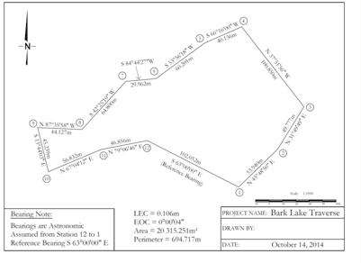
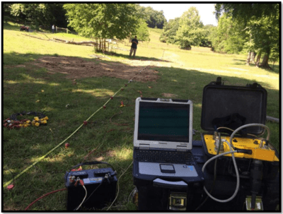

Map displaying Control Survey Markers cross area near Toronto, Ontario, from the COSINE Online Service website (COSINE ), accessed on [2023/12/06].
Principal projects and areas of expertise
- Subsurface Exploration: We excel in utilizing advanced techniques like seismic surveys, gravity measurements, and electromagnetic studies to explore and understand the subsurface geology and structures.
- Geophysical Data Interpretation: Our team possesses a strong capability for interpreting geophysical data, enabling us to extract valuable insights from complex datasets.
- Resource Exploration: We contribute significantly to resource exploration efforts, assisting industries in locating and assessing valuable subsurface resources.
- Seismic Hazard Assessment: Our expertise aids in assessing seismic hazards, ensuring the safety and resilience of infrastructure and communities.
- Environmental Monitoring: We play a crucial role in environmental monitoring, helping to safeguard natural ecosystems and human habitats.
- Informed Decision-Making: Our work supports data-driven decision-making across various industries, ensuring informed choices in resource management and development.
- Diverse Applications and Services: We are a versatile team with the ability to adapt our expertise to a wide range of applications and services, making us a valuable asset in numerous projects and initiatives.
Key projects and skills
- Geotechnical and Structural Exploration: Worked on various projects using techniques like ERT, MASW, ultrasonic, seismic refraction, GPR, induced polarization, and SP.
- Software Proficiency: SurfSeis MASW, res2dinv & res3dinv ERT, GPR, Petrel, AutoCAD, ArcGIS ProCatalyst.
- Data Analysis and Visualization: Excel, Power BI, Tableau, Python, and SQL.
Projects Overviews
AutoCAD Site Plan Development
Objective: to create a site plan/map from previous GIS Survey Camp field data using industry standard software and (AutoCAD) and Coordinate Geometry (COGO). COGO is a method for calculating coordinate points from surveyed angles and distances.
Methodology: Collect all the raw data from the field survey, which includes coordinates, angles, and distances between survey points. Review the field notes for any annotations or additional information that may affect the map creation process. Input the collected angles and distances into the COGO software module within AutoCAD. COGO stands for Coordinate Geometry, and it's a system used to calculate precise positions based on surveyor measurements. The COGO functions are used to create a network of points, lines, and curves that represent the surveyed area.
Geophysical Study in Phelps County, Missouri
Objective: The study aimed to image the subsurface of a study area in Phelps County, Missouri, to a depth of 70 feet, utilizing electrical resistivity tomography (ERT) and multi-channel analysis of surface waves (MASW).
Methodology: The project involved comparing ERT profiles from different array configurations and assessing the MASW data quality. The focus was on imaging various soil types and limestone bedrock, categorizing them based on moisture content and structural integrity.
Findings: The subsurface imaging successfully reached the targeted depth, with soil categorizations ranging from dry to clayey. The limestone bedrock was categorized as either weathered or intact. The study provided a consistent interpretation of the top-of-rock, aligning ERT and MASW data and correlating with the 70 ohm-m contour value.
Publications
Jaafar, Ragab W., et al. "Imaging in Karst Terrain Utilizing the Electrical-Resistivity and Multichannel Analysis of Surface-Wave Methods." Published in SEGAM 2018. Imaging in karst terrain utilizing the electrical-resistivity and multichannel analysis of surface-wave methods | SEG Technical Program Expanded Abstracts 2018
Contributions and Achievements
Ragab's work in karst terrain imaging represents a significant contribution to understanding subsurface structures, essential for both environmental and infrastructural planning. His approach to combining multiple geophysical techniques has been instrumental in providing reliable data interpretations, vital for the accuracy of geophysical surveys.